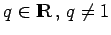
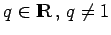
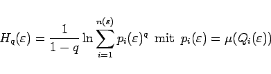
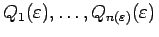
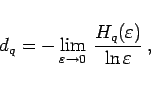
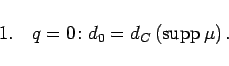
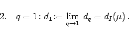
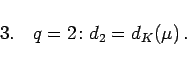

Inhalt Index DeskTop Bronstein

 Dynamische Systeme und Chaos Quantitative Beschreibung von Attraktoren Dimensionen Auf invariante Maße zurückgehende Dimensionen
Dynamische Systeme und Chaos Quantitative Beschreibung von Attraktoren Dimensionen Auf invariante Maße zurückgehende Dimensionen


Der Attraktor  von
von  auf M mit invariantem ergodischem Wahrscheinlichkeitsmaß
auf M mit invariantem ergodischem Wahrscheinlichkeitsmaß  wird wie bei der Einführung der metrischen Entropie mit Würfeln der Seitenlänge
wird wie bei der Einführung der metrischen Entropie mit Würfeln der Seitenlänge  überdeckt. Für einen beliebigen Parameter  heißt
überdeckt. Für einen beliebigen Parameter  heißt
|  | (17.47a) |
verallgemeinerte Entropie q-ter Ordnung bezüglich der Zerlegung .
Die RÉNYI-Dimension q-ter Ordnung ist
|  | (17.47b) |
falls dieser Grenzwert existiert.
Sonderfälle der Rényi-Dimension:
|  | (17.48a) |
|  | (17.48b) |
|  | (17.48c) |